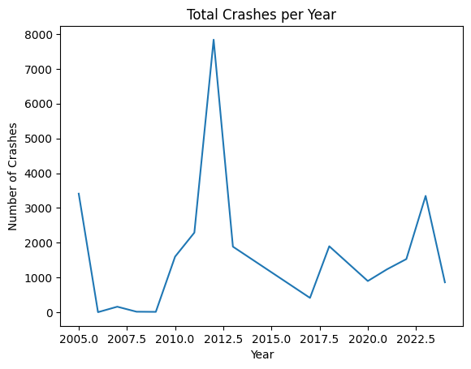
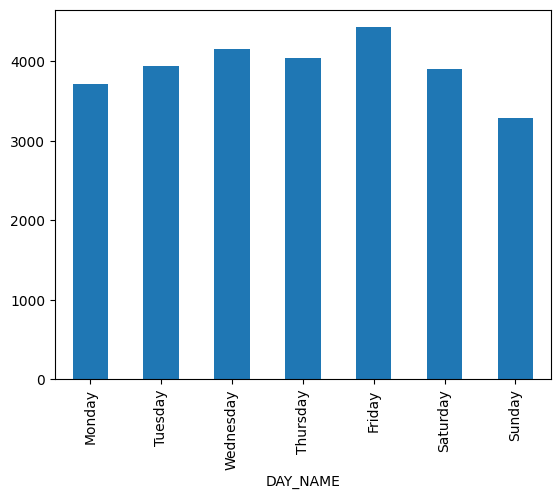
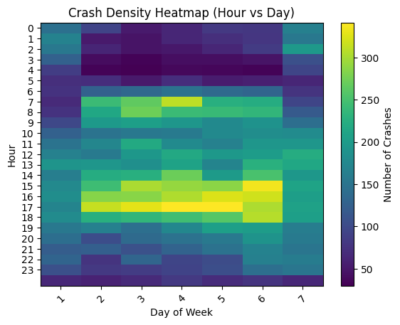
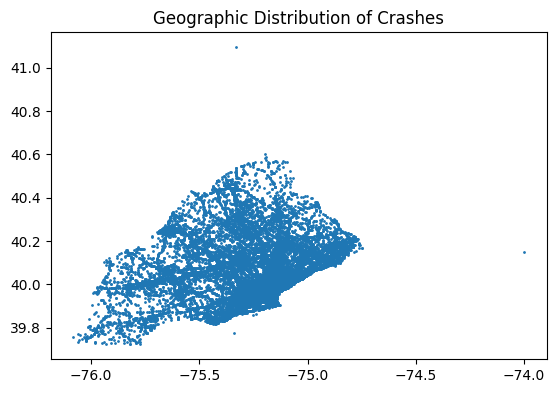
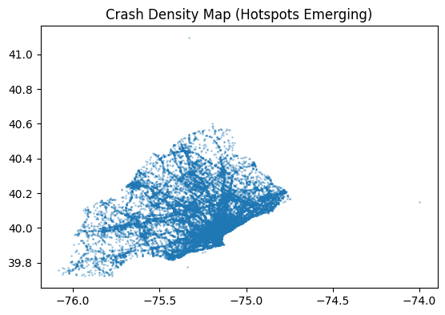

Accidents in Philadelphia - What can we learn from them?
Every city has its rhythms. Morning rush, late-night quiets and weekend energy. But what if we looked at those rhythms through a different lens? Instead of traffic flow, we look at traffic crashes.
Using nearly two decades of PDOT crash data, we will try uncover patterns to answer questions like:
Are crashes really worse during rush hour?
Do weekends make roads more dangerous?
Has safety improved over time?
Let’s dive in.
import pandas as pdimport matplotlib.pyplot as pltdf = pd.read_csv("PDOT_crash_data_2005_2024.csv")df.head()
/tmp/ipykernel_3094128/423130451.py:3: DtypeWarning: Columns (0: INTERSECTION_RELATED, 1: SECONDARY_CRASH, 2: WZ_CLOSE_DETOUR, 3: WZ_WORKERS_INJ_KILLED) have mixed types. Specify dtype option on import or set low_memory=False.
df = pd.read_csv("PDOT_crash_data_2005_2024.csv")
crashes_per_year = df["CRASH_YEAR"].value_counts().sort_index()plt.figure()crashes_per_year.plot(kind='line')plt.title("Total Crashes per Year")plt.xlabel("Year")plt.ylabel("Number of Crashes")plt.show()

At first glance, the trend is not strictly increasing or decreasing — instead, it fluctuates.
But here’s the interesting twist:
There are noticeable dips in certain years, and a huge spike in 2012. (https://www.cnn.com/2012/07/23/travel/us-traffic-fatalities)
The reason for this spike is unclear but is hypothesized to be events of extreme weather. Realistically, though, I am of the opinion that even several extreme weather events are unlikely to cause such a huge hike in crashes.
A more reasonable and expected pattern in the data above is the dip in 2020. These dips often align with external disruptions (like reduced travel periods).
This suggests something important: Crash frequency is strongly tied to human activity levels. The pandemic led to a widespread lockdown in 2020, resulting in a sharp decline in road traffic and, consequently, in crashes.
This is fascinating. There is a vague but visible U-shape. Fatal crashes more often take place in the first few hours of the day, and the last few hours of the day, with a particular emphasizes on the last few hours.
Now this makes intuitive sense! Dark surroundings and low-visiblity often cause terrible accidents that lead to fatalities.
Morning rush hour (6 - 9 am): 22
Evening rush hour (4 - 7 pm): 48
There’s a huge difference! The evening rush hour, featuring high traffic and often taking place after sunset, is when a bulk of accidents take place.
day_map = {1: "Sunday", 2: "Monday", 3: "Tuesday", 4: "Wednesday", 5: "Thursday", 6: "Friday", 7: "Saturday"}df["DAY_NAME"] = df["DAY_OF_WEEK"].map(day_map)# 2. Now count the occurrences of the namescrashes_by_day = df["DAY_NAME"].value_counts()# 3. Reindex using the list of namesorder = ["Monday", "Tuesday", "Wednesday", "Thursday", "Friday", "Saturday", "Sunday"]crashes_by_day = crashes_by_day.reindex(order)# 4. Plot (this will now work!)crashes_by_day.plot(kind='bar')

Sometimes no observable patterns are also an importance thing to note. There isn’t any clear indication that certain days of the week are busier and involve more accidents.
pivot = df.pivot_table(index="HOUR_OF_DAY", columns="DAY_OF_WEEK", aggfunc="size")plt.figure()plt.imshow(pivot, aspect='auto')plt.colorbar(label="Number of Crashes")plt.title("Crash Density Heatmap (Hour vs Day)")plt.xlabel("Day of Week")plt.ylabel("Hour")plt.xticks(range(len(pivot.columns)), pivot.columns, rotation=45)plt.yticks(range(0,24))plt.show()

This heatmap reveals a clear “rush hour” correlation, with the highest crash density (indicated by the yellow bands) occurring between 3:00 PM and 6:00 PM (Hours 15–18) on weekdays. This suggests that the afternoon commute is significantly more hazardous than the morning peak. While a secondary morning spike is visible around 7:00 AM, it is less intense. Geometrically, the “dark” regions from midnight to 5:00 AM reflect the lowest risk due to reduced traffic volume. Interestingly, the weekend patterns (Days 1 and 7) lack the distinct commuter peaks, showing a more uniform distribution of incidents throughout the afternoon.
import geopandas as gpdfrom shapely.geometry import Pointgeometry = [Point(xy) for xy inzip(df["DEC_LONGITUDE"], df["DEC_LATITUDE"])]gdf = gpd.GeoDataFrame(df, geometry=geometry)# Plotgdf.plot(markersize=1)plt.title("Geographic Distribution of Crashes")plt.show()gdf.plot(markersize=1, alpha=0.3)plt.title("Crash Density Map (Hotspots Emerging)")plt.show()


The above is a reflection of which roads are busier - the ones typically in center city, and the regions with less traffic in surrounding areas where the accident density is lower.
Pretty cool how this distribution essentially draws a map of the data collection area!